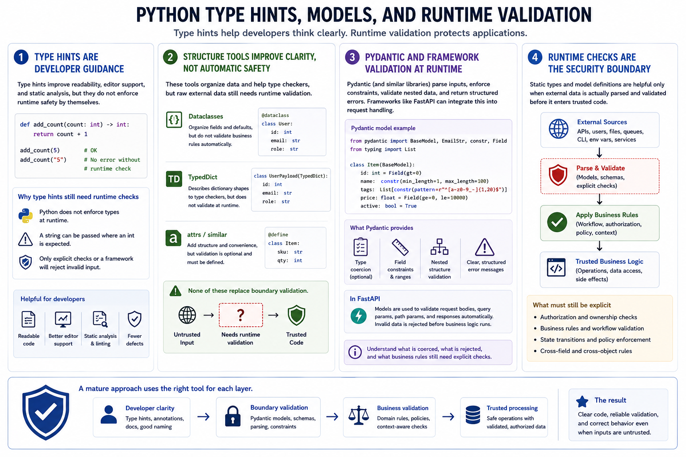

Python Type Hints and Runtime Validation
Connecting to LMS... Progress: in progress

Narration
Python type hints are useful developer guidance. They make code easier to read, improve editor support, and allow static analysis tools to catch certain mistakes. But type hints usually do not enforce runtime safety by themselves. If a function is annotated to receive an integer, Python will not automatically reject a string unless the code or framework performs an actual runtime check.
Dataclasses, TypedDict, attrs, and similar patterns can improve structure, but they have different enforcement behavior. A dataclass can organize fields, but it does not automatically validate every field's business rule. TypedDict helps describe dictionary shapes to type checkers, but raw JSON from a request still needs runtime validation before it should be trusted. These tools support clarity; they do not remove the need for boundary checks.
Pydantic is commonly used for runtime validation and data models in Python applications. It can parse inputs, enforce field types, apply constraints, validate nested structures, and produce structured errors. Frameworks such as FastAPI can integrate model validation into request handling. Even then, developers should understand what is being coerced, what is being rejected, and which business rules still require explicit checks.
Runtime checks for external input are the security boundary. Static types, annotations, and model definitions are helpful only when the data crossing into trusted code is actually parsed and validated. A mature approach uses type hints for developer clarity, schema or model validation for input boundaries, and explicit business-rule checks where correctness depends on application context.